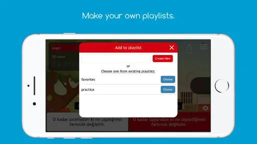
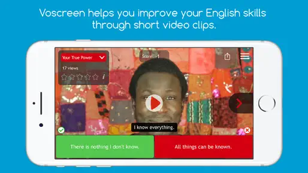

Voscreen 上手实战：每天 15 分钟，用电影片段把英语听力练到真听懂
从注册到刷第一条题，带你把 Voscreen 的 paraphrase 训练机制用起来。准备工作、实操步骤、常见闪退和解法，以及怎么配 English-to-English 模式让训练效果翻倍。
这篇教程结束时，你能独立完成 Voscreen 账号注册、设置好适合自己的难度、用 paraphrase 选择题把一段真实口音的视频听懂并选出同义改写项——而且你会知道为什么市面上大多数影视英语 app 练不出这个效果。
准备工作
你需要一台 Android 手机（或 iOS，流程基本一致），以及一个能正常收发邮件的邮箱。有 Facebook 账号的话也可以用它登录，不过邮箱注册更稳，后面改设置或找回密码都更方便。
Voscreen 最后一次在voscreen官网上的更新停在 2018 年，这意味着两个事实：一是它的界面设计有点古早但功能完整；二是新版本系统上偶尔会有注册闪退的情况，后面会讲怎么处理。安装包从下载拿，装完先别急着打开，Android 用户建议先去系统设置里把 Voscreen 加入"后台不受限制"列表，不然系统省电策略可能在后台把它杀掉，导致训练进度丢失。
第一步：注册账号（可能会闪退，先看办法）
打开 Voscreen，你会看到两个选项：邮箱注册和 Facebook 登录。优先选邮箱。填完邮箱和密码后，Voscreen 会发一封确认邮件，点里面的链接就算注册成功——注意有些邮箱会把它丢进垃圾邮件文件夹，找不到记得去翻一下。
如果点注册按钮直接闪退了，别慌，这是老版本 app 在新系统上的常见问题。社区流传最稳的解法是：先打开 Voscreen 的网页版（用电脑或手机浏览器都行），在网页上走完注册流程，然后回到移动端直接点"登录已有账号"。闪退只发生在"注册新账号"那条路径上，登录已有账号走的是另一段代码，大概率能正常进。实在不行就先用网页版，功能跟移动端完全一致。
注册过程中 Voscreen 会让你选母语。这个选择影响默认界面语言和 paraphrase 选项的呈现方式——但可以随时在 Settings → Language 里改，第一次选错没关系。
第二步：先刷 10 条 Life itself，让系统摸你的底
进入主界面后，Voscreen 的 ALIVE 自适应学习系统会根据你的听力水平推送不同难度的素材。但它一开始不知道你是什么水平，所以先别急着去 voStep 或 voStructure 里刷题，进 Life itself 模式先刷 10 条真实影视片段的选择题。
这 10 条的准确度决定了 ALIVE 对你起始难度的评估——答得好后面推的题就难一些，答得一般就从基础开始。预期你会看到：每条题先播放一段 3~10 秒的视频片段，然后屏幕上出现 3~4 条英文选项和一个 21 秒倒计时，选完立刻揭晓正确答案和对应字幕。

第三步：理解 paraphrase 机制——这才是 Voscreen 独有的东西
市面上大多数影视英语 app 给你的是填空题或跟读：视频里说 "I bumped into an old friend at the supermarket"，填空题挖掉 "bumped into"，你只要记住这个短语就能蒙对，不代表你真的听懂了整句话在真实语境里的意思。
Voscreen 的选择题永远不会直接给原句的改写版本。它把视频里的原句改写成意思相近但说法完全不同的另一句英文，放进选项里。你要做的是：听完原句（带真实口音、自然语速，可能还有连读弱读），然后在 21 秒内找出同义变换后意思最接近的那条。
举个逻辑示意：视频原句是 "You've been dragging your feet on this project for weeks now."，四个选项里正确答案可能是 "You've been slowing down and delaying this project."——它把 "dragging your feet" 这个习语改写成了 plain English 的 "slowing down and delaying"。如果你只听到 "project" 这个关键词，根本没法选；你必须真听懂（或真猜到）原句的意思，才能选对。
这个设计同时练了三件事：听辨真实语言输入（不是课本录音）、同义变换能力（paraphrasing，雅思口语写作和商务英语都极其需要但很少有 app 直接练）、同义词和反义词积累。App Store 描述里特别提到选 "English-to-English" 语言模式时，界面引导也全英文，专门强化这种训练。想系统研究这个训练机制的完整设计，可以翻一下voscreen文档。
第四步：切到 English-to-English 模式，效果翻倍
如果你已经有 B1 以上的英语水平，注册完成后立刻去 Settings → Language 把界面切成全英文。别小看这个切换：不仅选择题的选项是英文（这本来就是 paraphrase 机制的要求），连揭晓答案的解释、设置界面的引导语、ALIVE 系统给你的反馈全都是英文。这时候你不仅在做 paraphrase 选择题，连 Voscreen 给你的每一条提示都在训练英文理解。
如果目前还没到 B1，先用母语界面跑一周，等熟悉了交互逻辑再切——但别一直停在翻译依赖里。选母语翻译模式可以降低起步门槛，但长期来看，用英语理解英语才是听力真正进阶的路径。
新手最容易翻车的三个地方
闪退后不知道换网页版注册。 这是目前反馈最多的问题。症状是点注册按钮 app 直接关闭。解法很简单：网页版走通注册，然后移动端登录已有账号。不要死磕移动端注册流程，它就是有 bug。
靠关键词蒙题。 刚上手时你可能会发现：视频里说的话只抓住了一两个词，然后去选项里找有这两个词的就选。短期可能能蒙对，但 ALIVE 系统会根据你的准确度调整推送难度，长期蒙题会让你一直停在低难度，而且真到需要听懂真实对话的时候会突然发现自己跟不上。
Android 后台杀进程。 小米、OPPO、华为等国产手机的省电策略默认会在后台杀掉不活跃的 app。如果你刷了一半切出去看消息，再回来可能发现答题进度丢了。第一次使用时就把 Voscreen 加入"后台不受限制"或"白名单"——小米在"电量与性能 → 应用管理 → Voscreen → 省电策略 → 无限制"，其他品牌类似。
进阶：配合 voStep 和 voStructure 定向补漏
Life itself 是混合难度的真实素材，用来建立听力基线画像。刷完 10 条后，你可以去 voStep Intermediate 或 voStructure 的具体语法点里定向训练——比如冠词用不对就刷冠词相关的片段，虚拟语气总错就集中练虚拟语气。每条答完后别着急跳下一条，扫一眼错误选项的写法，那些也是 paraphrase 变体，下次可能在别的题里以另一种组合出现。

Voscreen 的这套训练资料覆盖了安卓版的完整内容，GitHub、Gitee和GitCode三个仓库都能拿到，国内访问选后两者会更快一些。网页版功能跟移动端一致，电脑上答题屏幕更大、倒计时更清楚，适合在家用电脑的时候补刷。关键是别让自己停下来——每天 15 条 paraphrase 选择题，比看一小时带字幕的视频练听力效率高得多。